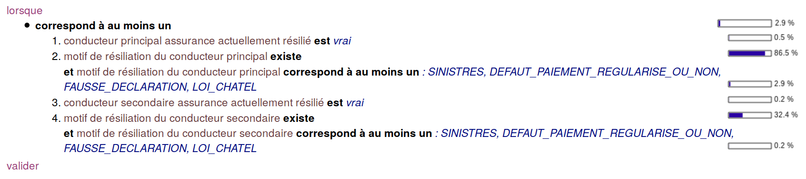
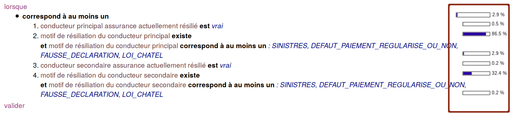
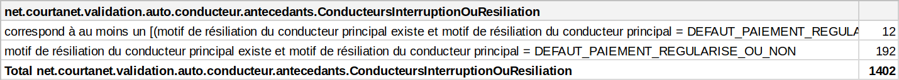

Domain Object Oriented Validation
dOOv is a fluent API for typesafe domain model validation

We developed a typed, null-safe, two way mapping framework
from key value to model.
object
public class Account {
@Path(field = SampleFieldId.LOGIN,
readable = "account login")
private String login;
@Path(field = SampleFieldId.PASSWD,
readable = "account password")
private String password;
}dictionary
Account account = new Account();
account.setLogin("alex");
SampleModel model = new SampleModel();
model.setAccount(account);
SampleModelWrapper wrapper
= new SampleModelWrapper(model);
wrapper.get(SampleFieldId.LOGIN); // alex
wrapper.set(SampleFieldId.LOGIN, "bob");
wrapper.get(SampleFieldId.LOGIN); // bob
key model
class Model {
User user;
}
class User {
@Path(field = EMAIL
readable = ...)
String email;
}
enum ModelFieldId {
EMAIL;
}code generate
class ModelFieldInfo {
FieldInfo EMAIL;
}
class DslModel {
StringFieldInfo userEmail;
}
class ModelWrapper {
...
}write rules
class Validations {
ValidationRule email =
DOOV.when(userEmail.eq(...))
.validate()
.register(REGISTRY_DEFAULT);
}wrap model
User user = new User();
user.setEmail("e@mail.com");
Model model = new Model();
model.setUser(user);
ModelWrapper wrap
= new ModelWrapper(model);execute
// Directly reference rule email
Validations.email.executeOn(wrap);
// Or use the registry
REGISTRY_DEFAULT.stream()
.map(rule -> rule.executeOn(wrap));public class Account extends Identity {
@SamplePath(field = SampleFieldId.TIMEZONE,
readable = "account timezone")
private Timezone timezone;
@SamplePath(field = SampleFieldId.PHONE_NUMBER,
readable = "account phone number")
private String phoneNumber;
@SamplePath(field = SampleFieldId.EMAIL,
readable = "account email")
private String email;
@SamplePath(field = SampleFieldId.EMAIL_ACCEPTED,
readable = "account email accepted")
private boolean acceptEmail;
@SamplePath(field = SampleFieldId.EMAILS_PREFERENCES,
readable = "account préférences mail")
private Collection<EmailType> emailTypes = new HashSet<>();
}public static boolean validateAccount(User user, Account account, Configuration config) {
if (config == null) {
return false;
}
if (user == null || user.getBirthDate() == null) {
return false;
}
if (account == null || account.getCountry() == null || account.getPhoneNumber() == null) {
return false;
}
if (YEARS.between(user.getBirthDate(), LocalDate.now()) >= 18
&& account.getEmail().length() <= config.getMaxEmailSize()
&& account.getCountry().equals(Country.FR)
&& account.getPhoneNumber().startsWith("+33")) {
return true;
}
return false;
}ValidationRule userAccount = DOOV
// Entry point is when
.when(userBirthdate.ageAt(today()).greaterOrEquals(18)
.and(accountEmail.length().lesserOrEquals(configurationMaxEmailSize))
.and(accountCountry.eq(Country.FR))
.and(accountPhoneNumber.startsWith("+33")))
// Terminal operation is validate
.validate()
// Optional: add to registry
.registerOn(REGISTRY_DEFAULT);@Test
public void should_user_account_validates() {
// Condition assert
assertThat(accountEmail().isNotNull()).validates(wrapper);
// Rule assert
assertThat(RulesConference.userAccount).validates(wrapper);
// Result assert
Result result = RulesConference.userAccount.executeOn(wrapper);
assertThat(result).isTrue();
}The entry point is DOOV#when(StepCondition) and the operation StepWhen#validate returns the validation rule
DOOV.when(accountEmail().matches("\\w+[@]\\w+\\.com")
.or(accountEmail().matches("\\w+[@]\\w+\\.fr")))
.validate()This is lazy
A natural language version of the rule is available with ValidationRule#readable.
This makes auditability and compliance possible.
System.out.println(EMAIL_VALID.readable());
> When (email matches '\w+[@]\w+\.com' or email matches '\w+[@]\w+\.fr') validateYou can add the rule in one or many registry with ValidationRule#registerOn(Registry)
This makes governance possible.
DOOV.when(accountEmail().matches("\\w+[@]\\w+\\.com")
.or(accountEmail().matches("\\w+[@]\\w+\\.fr")))
.validate()
.registerOn(REGISTRY_ACCOUNT);The terminal operation ValidationRule#executeOn(FieldModel)
executes the rule
REGISTRY_ACCOUNT.stream()
.map(rule -> rule.executeOn(model))
.filter(Result::isInvalid)
.map(Result::message)
.collect(toList());The available operations depend on the field type, and the arguments are type safe and validated by the compiler
DOOV.when(userAccountCreation().after(LocalDate.of(2000, 01, 01))).validate();
// ^^^^^
// only for date fieldDOOV.when(userAccountCreation().after(LocalDate.of(2000, 01, 01))).validate();
// ^^^^^^^^^^^^^^^^^^^ ^^^^^^^^^^^^^^^^^^^^^^^^^^^
// date field is type safe hereMakes readable text generation possible:
we can output a multi-language rules catalog
in multiple formats (text, markdown, HTML, etc.)
We generate a HTML validation rules catalog,
grouped by insurers and by insurance product
The syntax tree makes it possible to generate the rule as text. Notice how the elements from the tree are tokenized (operator, fields, etc.) 
Also, the syntax tree makes it possible to see all the rules that applies for a specific field, for example the driver's date of birth.
During execution, each node of the AST captures context value and predicate result. We know at runtime which node failed, and why.
We make daily statistics that helps us shape the business,
by removing or tweaking rules as needed

We also rewrite the execution rules by simplifying the predicate tree, to show the minimal predicate that fails. This is a complex problem we are currently working on.
By default, predicate evaluation in dOOv behaves like Java: it short-circuits. This can be disabled to execute all nodes, even if they don't impact the end result.
We use JMH to check the performance of the DSL
Benchmark Mode Samples Mean Mean error Units
o.m.BenchmarkOldRule.valid_email thrpt 25 1860.553 42.269 ops/ms
o.m.BenchmarkRule.valid_email thrpt 25 1733.465 18.461 ops/msPerformance of the DSL and POJO code are very close
We tested the performance of dOOv against the Bean Validation benchmark
and dOOv is faster in every category (hint: reflection API)

https://beastie.lesfurets.com/articles/doov-revisits-bean-validation-benchmark
Bean Validation rules are not strongly typed since it's annotation based. This code will fail at compile time, but your IDE won't be able to tell you why.
public class Account {
@NotNull @Email
private Email email;
}Because Bean Validation constraints are based on field annotation, cross validation between fields are only available through the extension mechanism.
public class Account {
@Pattern(regexp = "(FR)|(UK)")
private String country;
@Pattern(regexp = "???")
private String phoneNumber;
}Bean Validation rules are not written with a natural language syntax and does not provide a syntax tree
@Size(min = 10, max = 200,
message = "About Me must be between 10 and 200 characters")
private String aboutMe;userAboutMe().length().between(10, 200).validate().readable()
> When user about me length is between 10 and 200, validate with message...
We migrated our 492 business rules to dOOv,
we now have compliance, auditability, governance, clarity
(and more!)
Next step is extending the DSL to create an object to object mapping framework, Domain Object Oriented Mapping (dOOm). It will feature the same AST to text and statistics functionnalities.
DOOV.map(userEmail().to(insurerEmail())
.map(userFirstName(), userLastName())
.using(StringJoiner)
.to(insurerFullName())
.when(userCountry().eq(FR))
.map(userPhone().to(insurerPhone()))Stay tuned for the next versions!